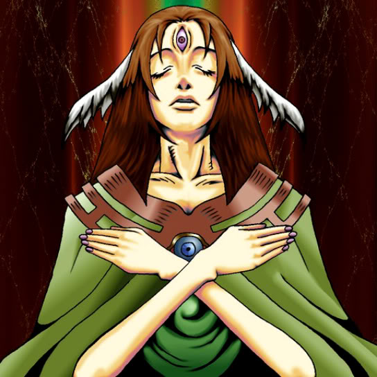

Goddess with the Third Eye

STATS
ATK: 1200
DEF: 1000DECK COST
Deck Cost per Card: 22Fusion List (21 Possible Fusions)
- Goddess with the Third Eye + Ancient Jar = Mystical Sand
- Goddess with the Third Eye + Doma The Angel of Silence = Dark Witch
- Goddess with the Third Eye + Arlownay = Queen of Autumn Leaves
- Goddess with the Third Eye + Armored Rat = Nekogal #2
- Goddess with the Third Eye + Dancing Elf = Dark Witch
- Goddess with the Third Eye + Fiend Reflection #1 = Winged Egg of New Life
- Goddess with the Third Eye + Griffore = Nekogal #2
- Goddess with the Third Eye + Lady of Faith = Dark Witch
- Goddess with the Third Eye + Laughing Flower = Queen of Autumn Leaves
- Goddess with the Third Eye + Man Eater = Queen of Autumn Leaves
- Goddess with the Third Eye + Milus Radiant = Nekogal #2
- Goddess with the Third Eye + Pot the Trick = Mystical Sand
- Goddess with the Third Eye + Princess of Tsurugi = Dark Witch
- Goddess with the Third Eye + Ray & Temperature = Dark Witch
- Goddess with the Third Eye + Silver Fang = Nekogal #2
- Goddess with the Third Eye + Skelengel = Dark Witch
- Goddess with the Third Eye + Tenderness = Dark Witch
- Goddess with the Third Eye + Vishwar Randi = Dark Witch
- Goddess with the Third Eye + Wing Egg Elf = Dark Witch
- Goddess with the Third Eye + Winged Egg of New Life = Dark Witch
- Goddess with the Third Eye + Wolf = Nekogal #2